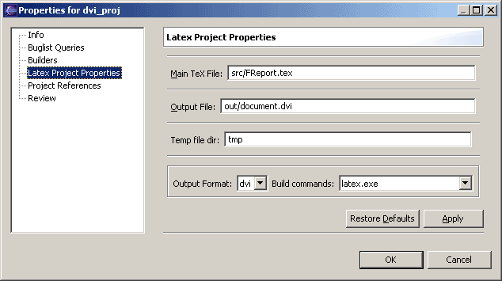

This page contains a list of external programs that are used when building. Not all programs are necessary in use, the actual programs needed depends on the project output format and build commands -settings.
Choose one program in the list and press the edit-button. A configuration dialog
will appear. The program configuration dialog contains a text field for specifying
the location of the program, and another field for the program arguments. The
default values that are provided should work on fairly recent systems.
LaTeX version 7.3.x doesn't seem to support --src-specials
-argument, so that may have to be changed when working with an older distribution.
TeX distribution usually contains one directory, where all the executable programs
are installed (usually called "bin"). That directory contains a lot of
programs, and some people don't keep it in their path.
If the TeX-programs directory is not in the path (or if Eclipse installs
its own path environment variable at startup), TeXlipse can't find the necessary
programs. Because it is boring to setup ten programs individually, there is a
text box to set the paths all at once. Press Browse-button, browse to the TeX-programs directory
(the directory where latex, bibtex, etc. programs are) and
press the big Apply-button at the bottom of the page. The program paths should all change.
The console log means the Console View, which is accessible through Window > Show View > Other > Basic > Console. If the builder console log is enabled, all the messages printed by external programs to standard output will be shown in the console log. It is very handy for figuring out why something doesn't work.
LaTeX writes additional informations into .aux files. Texlipse has a special parser
for this kind of files that extracts informations about citations and labels. The
citation information are used to determine whether a BibTeX run is necessary.
Some environments like lstlisting have a special syntax to add a label to it.
These labels are not detected by Texlipse's LaTeX parser in the source code.
The .aux file parser can detect them and hence there should be
no false warnings about undefined labels after a build.
This page contains LaTeX-editor specific options. The code completion can be enabled
or disabled and the delay for the completion menu to appear can be adjusted. Similarly,
automatic parsing of documents after the last edit can be enabled. From here,
automatic wrapping of text can also be adjusted. You can also turn on or off highlighting
of matching \begin{..} and \end{...} commands. The style of the highlighting
can be configured under General/Editors/Text Editors/Annotations.
\begin and \end)
can have their contents indented to keep the document structure clear. Those environments
are listed in this page. Also the indentation width, i.e. the number of spaces that is inserted
to the beginning of a line, can be changed in this page.
The LaTeX-editor has a configurable outline. This page has controls to enable or disable some common LaTeX document sections' appearance in the outline. There is also a list of environments to show in the outline.
These settings also apply for the full LaTeX outline, which display an outline of the whole project.
Smart keys is a feature that works similarly as in vim-latex. Enabling smart backspace changes the behaviour of backspace so that when pressed when the cursor is after an accented character, e.g. \"o, the backspace deletes the entire accented character. Conversion of quotation marks converts " to the right kind of LaTeX quotation mark. Dollar sign and bracket completion adds a closing dollar sign or parenthesis automatically after an opening one has been typed. Ldots replacement automatically replaces ... with \ldots in text.
Style completions are intended to change the style of a marked region. When text is marked in the editor, pressing the content assist key (usually ctrl+space) shows a list of styles that can be applied to the given text.
On the spellchecker page the user can specify the aspell command to use as well as command line arguments.
This page shows the list of configuration defaults for external viewer programs.
The viewers are sorted by priority, from high to low, and when a preview is launched
from the editor the topmost viewer matching the current output format is used.
Viewer configurations can be edited by choosing a configuration name from the
list and pressing the edit-button. A viewer configuration dialog will appear.
The viewer program location and viewer arguments can be changed from this
dialog. If the arguments-field contains the special string "%file",
it will be replaced with the input file name when launching viewer, and if
the arguments-field contains the string "%fullfile" it's replaced
with the full path of the input file.
On Windows the viewer configuration defaults page also contains
two group boxes titled "DDE Message to send on view" and "... on rebuild". These
let you specify DDE messages (a Windows only IPC mechanism) that should be sent
when launching the viewer and before a rebuild. This is very handy with Acrobat,
where you can automatically close the open document before a rebuild. Note that
for the close document command to work, the document has to be opened using a DDE command.
Therfore it would be best to remove the %file argument from the acrobat
configuration if DDE is used.
After editing a viewer configuration default you may be asked if you would like to update any launch configurations that has been based on this default. This is usually a good thing to do, unless you've made spesific customizations to a launch configuration.
The inverse search port number is the port that is opened for external viewer programs to input inverse search (navigation from output file to source file) commands.
The return focus to Eclipse checkbox allows you to force Eclipse to regain focus after a preview has been launched. This can be handy when working on dual monitors, when you want to get right back to writing after seeing the results.
This dialog opens by selecting Project > Properties from the Eclipse menu and choosing Latex project properties. This dialog contains options specific to the project.
Note: project properties dialog shows only the property pages associated to the current Eclipse perspective. If your project is a Java project, your workbench is likely to be in Java perspective. Because TeXlipse is built upon Resource perspective, you may have to switch to Resource perspective in order to see the Latex project properties.

This field contains the name and path of the project main file. Main file means
the file that is given to external latex program as a parameter.
The project main file is necessary because a Latex project doesn't always have an obvious main file. If the Latex project is, for example, a book project, there might be more than ten files with the extension '.tex'. Because of the flexible syntax of LaTeX, there is no simple way to determine which of these files is the starting point of the document. To prevent weird errors, determining which file is the main file is left to the user.
This field contains the name and path of the project output file. Note that the extension of this file must be the extension of the output format chosen.
This field contains the name of the directory that is used for storing temporary files (e.g. Latex aux- and log-files). Temporary files are recognised from their file extension. The list of file extensions for temporary files is in the Latex Temp Files preference page.
This option configures the output file format of the project. There is a possibility to choose between DVI (Device Independent format), PS (PostScript format) and PDF (Portable Data File format). The output file has to have the extension according the file format. Note that changing this field affects the output file name's extension, but not the other way around.
This option shows which combination of external programs is used to build
this project. For example, if PostScript (.ps) output is chosen, there is
a chance to choose between pslatex and latex+dvips.
Choosing pslatex here means that the pslatex program is
used to produce a PostScript file directly, whereas
latex+dvips means that the latex program is used to
produce a DVI file and then the dvips program is used to convert
the DVI file into PostScript format.